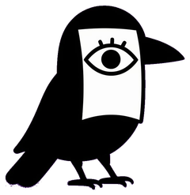

Library
 Syncing…
Syncing…
Nothing synced yet.
Sync your library from the relay.
Scan the linking QR on your desktop

Syncing…
Thinking…
Managed on the desktop. Change the model or key there and it syncs here.